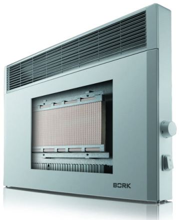
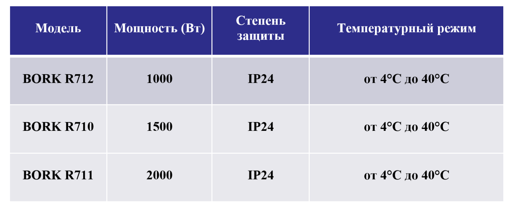
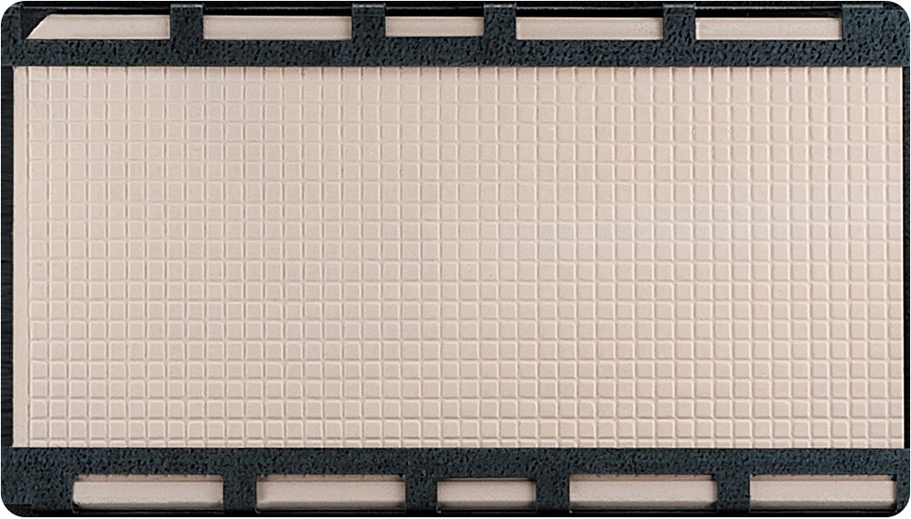
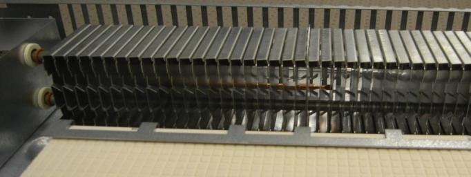
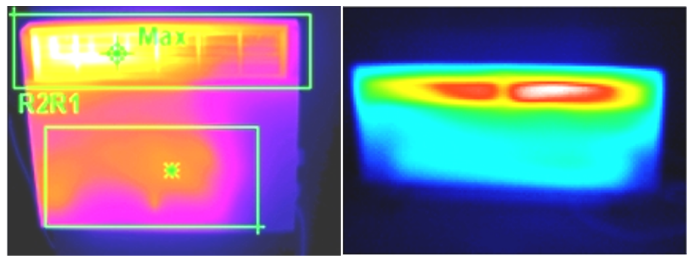
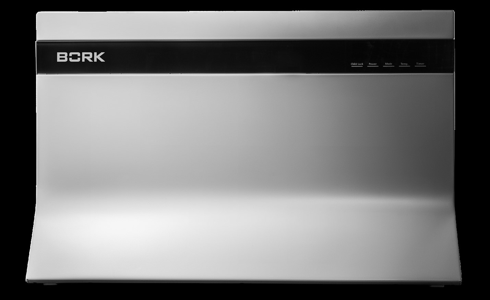
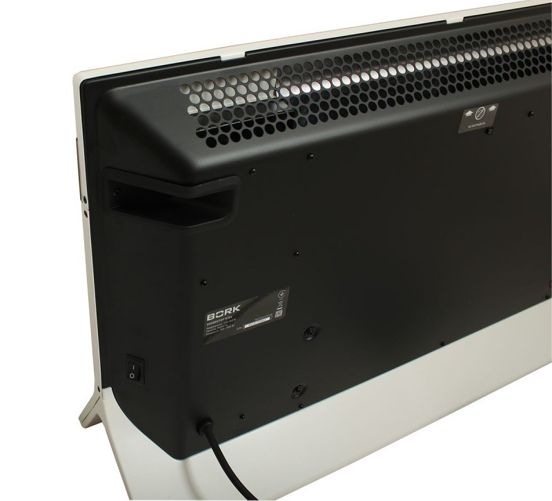
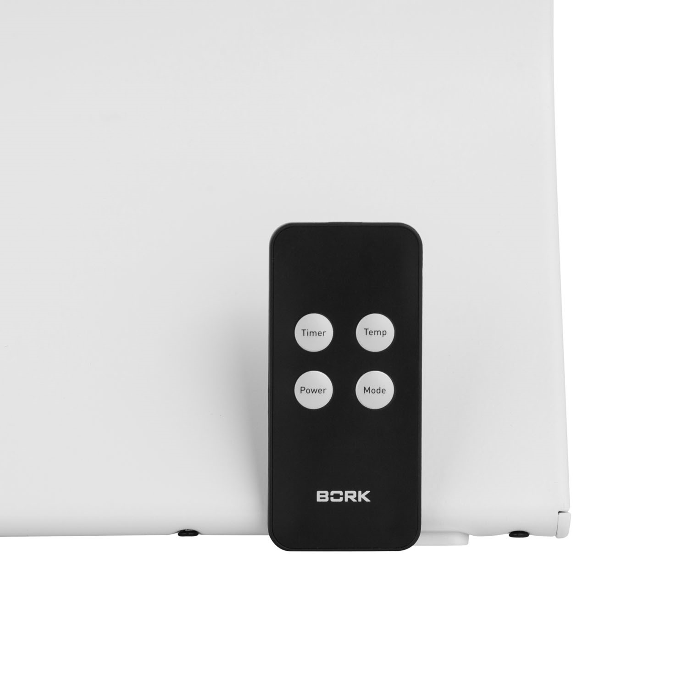

Конверторы BORK R710 (Grey)/ 711
 Дополнительный нагревательный элемент Magmatic ™ работает по принципу русской печи: аккумулирует тепло от основного нагревательного элемента и дает дополнительный обогрев. Уникальная форма нагревательного элемента позволяет достичь более высокого значения КПД за счет конструкции и увеличенной площади нагрева.
Как известно, после того как в русской печи прогорят дрова, сама она еще продолжительное время остается довольно теплой, и греет накопившимся теплом весь дом.
При достижении заданной температуры, высокоточный термостат выключает питание и дополнительный нагревательный элемент Magmatic ™ поддерживает заданную температуру в течении 20 минут без потребления электричества.
Уникальная комбинация конвектора и теплового аккумулятора, обеспечивает высокую эффективность обогрева и экономию электроэнергии. Запатентованная технология Magmatic поддерживает естественную конвекцию воздуха, даже когда обогреватель отключается, обеспечивая в помещении правильный баланс температуры и комфортные условия.
Тепловой аккумулятор способен выделять тепло в течение 45 минут, в зависимости от заданной температуры и характеристик помещения.
Нагревательный элемент
Нагревательный элемент выполнен из меди. Медь характеризуется высокой теплопроводностью.
Теплообменники выполнены из силумина. Силумин легко отдает тепло воздуху.
Уникальная форма нагревательного элемента, в виде вертикальных тоннелей для воздушного потока, обеспечивает большую теплоотдачу за счет увеличенной конвекции и увеличенной площади нагрева.
Воздух прогревается быстрее при меньшей температуре нагревательного элемента.
Высокая эффективность
В сравнении с обычными конвекторами.
На первой фотографии видно, что конвектор BORK обладает высокой температурой по большей части поверхности. Это обеспечивает увеличенную теплоотдачу за счет излучения. Увеличенная теплоотдача за счет излучения позволяет человеку согреться быстрее и эффективнее, при этом так же экономя электроэнергию.
Аргументы
- Сделано в Германии!
- 5 лет гарантии!
- Увеличенная пропускная способность воздушного потока
- Увеличенная площадь теплообмена
- Увеличенная теплоотдача
- Два варианта установки
- Стильный немецкий дизайн
- Устойчивая конструкция
- Занимает меньшую площадь
- Легкое управление
- Качественные материалы
- Предназначен для основного отопления и дополнительного
- Небольшое сечение нагревательного элемента
- Эффективен при кратковременном отключении электроэнергии
- Перераспределяет нагрузку на электросеть, сохраняя эффективность
Конвертор BORK R704
Уникальный дизайн
Конвектор выполнен в традиционном для BORK сдержанном стиле по эксклюзивной разработке японских дизайнеров: строгая геометрия линий и элегантный белый цвет превращают бытовой прибор в изящное дополнение самых изысканных интерьеров.
Естественная конвекция
Работает практически бесшумно и распределяет тепло по принципу естественной циркуляции нагретого и холодного воздуха в диапазоне от +18˚С до +30˚С.
Три режима работы
LO – низкая мощность работы
HI – высокая мощность работы
Auto – автоматический режим
Данный режим позволяет контролировать температуру в помещении. Если температура в помещении выше 30°С, то конвектор автоматически переключается на 18°С.
Безопасность
Конвектор оснащен несколькими защитными функциями, позволяющими безопасно использовать его в детских комнатах. Устройство автоматически отключается при случайном опрокидывании, через 12 часов в состоянии покоя и при перепадах напряжения.
Удобство использования
Конвектор R704 отличается высокой энергоэффективностью, возможностью дистанционного управления и отсутствием шума при работе, что обеспечивает максимальный комфорт при его использовании.
